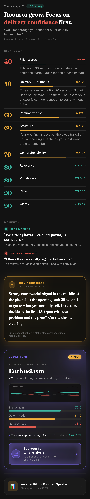

Left is the HTML design source. Right is a real PNG rendered through SwiftUI's ImageRenderer at 1170 × 6457px @3x from the same components that ship in the app (BreakdownMetricRow, AIMomentsCard, ToneAnalysisCard, ToneSparklineView, and the new verdict/coach blocks inside ResultsView).
Direction A, reordered. Playfair Display + DM Sans, OKLCH dark palette.
Rendered via ImageRenderer with seeded sample data matching the mockup. Real production components, not a re-skinned demo.

What's the same: verdict hierarchy with red focus word, italic curly-quoted question dek, breakdown sorted worst-first with focus/watch/strong status, editorial moments with circular icon tags + serif italic quotes, gold standout coach card with sparkle avatar + serif body, premium purple tone card with PRO gradient pill + sparkline + meta line + full-width CTA button, transcript slot below tone, up-next CTA.
Known mappings: Playfair Display → Fraunces72pt-Bold, DM Sans → Inter. Color palette is OKLCH on web, equivalent solid colors in AppColors (theme-aware light/dark).
Not in the snapshot: transcript section (the test seed has no transcript). Order in the live app is: verdict → breakdown → moments → coach → tone → transcript (if present) → up next.